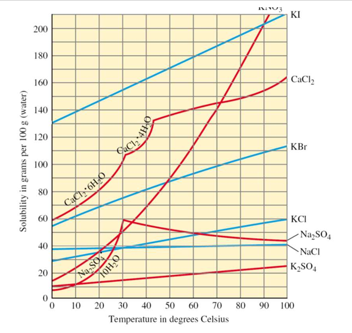
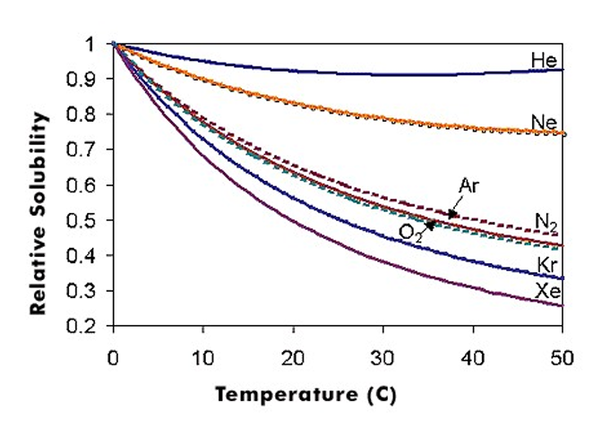

• 相似者相溶原則：極性溶質易溶於極性溶劑（如 $\text{NaCl}$ 溶於水）；非極性溶質易溶於非極性溶劑（如 $\text{I}_2$ 易溶於松香水或 $\text{CCl}_4$）。
• 氫鍵作用：若能與水形成氫鍵（如乙醇、丙酮、蔗糖），常能與水任意比例互溶。
• 定溫下，難溶性氣體之溶解度與液面上該氣體之分壓成正比：
⚠️ 重要考點：固體與液體體積不可壓縮，溶解度完全不受壓力影響！且極易溶並反應之氣體（如 $\text{HCl, NH}_3$）不遵守亨利定律。

